寅さんシリーズをもう一度 [梅吉]
日中はそれなりに気温も上がりますが朝晩はめっきり涼しくなって・・・
先日は半袖＆七部丈ズボンとガーゼケット一枚で寝ていたら寒くて目が覚めちゃいました。
翌日上掛けを少し厚手のものに変えました。
窓から差し込む日差しもやわらかくなって来ましたね＾＾

やわらかな日差しの中気持ちよさそうに眠る梅吉さん＾＾

けだるい午後３時って感じにみえますが午前９時ごろです (⌒_⌒;
朝寝が許されるのはにゃんこの特権でしょうか。
☆ ☆ ☆ ☆ ☆ ☆ ☆
麦わら帽子が完璧季節外れになってしまう前に
ゆきちさん命名「寅さんシリーズ」の撮影会をしましたよ＾＾
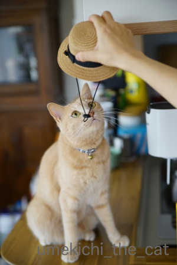
梅吉さんのこのお帽子姿、なかなか好評をいただいているのですよ。
さぁさぁ！！期待に応えましょうよー。

だめだw
モデルさんじゃれつきたい気分みたいです。

ぶ〜んと振り回して

こんなんなっちゃいましたw
そこにおひねりでも入れてもらいましょうか( ´艸｀)

なんとか撮れた一枚がこちら。
帽子から飛び出ているゴムは見なかったことにしてください・・・・・
 ↑ガブッと一押し↑
↑ガブッと一押し↑
先日は半袖＆七部丈ズボンとガーゼケット一枚で寝ていたら寒くて目が覚めちゃいました。
翌日上掛けを少し厚手のものに変えました。
窓から差し込む日差しもやわらかくなって来ましたね＾＾
やわらかな日差しの中気持ちよさそうに眠る梅吉さん＾＾
けだるい午後３時って感じにみえますが午前９時ごろです (⌒_⌒;
朝寝が許されるのはにゃんこの特権でしょうか。
☆ ☆ ☆ ☆ ☆ ☆ ☆
麦わら帽子が完璧季節外れになってしまう前に
ゆきちさん命名「寅さんシリーズ」の撮影会をしましたよ＾＾
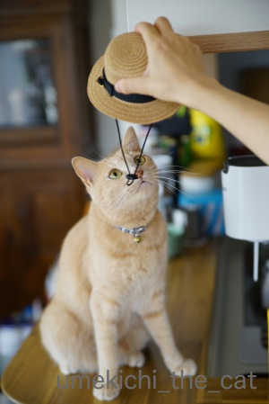
梅吉さんのこのお帽子姿、なかなか好評をいただいているのですよ。
さぁさぁ！！期待に応えましょうよー。
だめだw
モデルさんじゃれつきたい気分みたいです。
ぶ〜んと振り回して
こんなんなっちゃいましたw
そこにおひねりでも入れてもらいましょうか( ´艸｀)
なんとか撮れた一枚がこちら。
帽子から飛び出ているゴムは見なかったことにしてください・・・・・
梅吉は爪のお手入れがお好き [梅吉]
かつてはネイルサロンでジェルネイルなどしていた時期もありましたが
私が不器用なのか家事がしにくい（ラップ類が張り付く、細かいものが摘めない等）事と
何より梅吉に怪我をさせては大変なので今は自爪、ケアは自分でしております。
（ネイルしていても動物には全く危険はないよ！という方ももちろんいらっしゃるかと＾＾
これはあくまで私個人の判断です。梅吉、やんちゃだしね・・・）

色々お道具を使ってケアしますが（これはなんじゃ？という男性は身近な女性に聞いてくださいね）
このケア道具、梅吉の大好物でもあります。
撮影していたら眠ってたのに飛び起きてやって来ました！
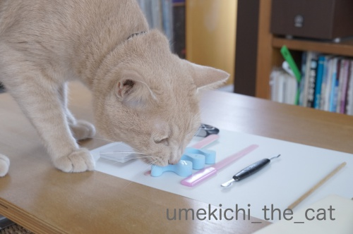
ケア用品の中でも一番執着しているのはこの青いスポンジ状のもの。
ペディキュアするときに足の指を離すために使うのですがこれが好きで好きで・・・
お気付きの方もいらっしゃるかと思いますがもう一山ないと全部の指が離れません。
足りない山はそう！梅吉に噛みちぎられましたw

のんきに写真を撮ってたら強奪されましたよ。
噛み心地が好きなんでしょうか・・・・・

強奪してがぶ！
念願叶ってウハウハかもしれませんが同時にちょっと困ってます。
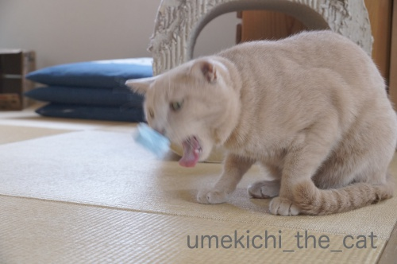
歯に刺さって取れない模様( ´艸｀)
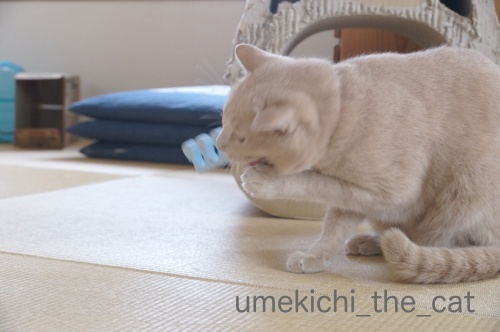
必死！！！

無事取れました。
おイタするからそんなことになるんですよwww
それにしてもすごい妖猫顔です (⌒_⌒;

私がケアしているときは張り付いてきます。

![[猫]](https://blog.ss-blog.jp/_images_e/101.gif) あが〜っ！
あが〜っ！
尖ったものが多いし危ないので梅吉に張り付かれるとケアが全然進みません（涙）
梅吉は幼い頃から人間の「爪」関係が大好きでした。
切った爪を食べようとした時期もあったしw
みなさんのお家のにゃんこは変なものに執着することはないでしょうか。
↑ガブッと一押し↑
私が不器用なのか家事がしにくい（ラップ類が張り付く、細かいものが摘めない等）事と
何より梅吉に怪我をさせては大変なので今は自爪、ケアは自分でしております。
（ネイルしていても動物には全く危険はないよ！という方ももちろんいらっしゃるかと＾＾
これはあくまで私個人の判断です。梅吉、やんちゃだしね・・・）
色々お道具を使ってケアしますが（これはなんじゃ？という男性は身近な女性に聞いてくださいね）
このケア道具、梅吉の大好物でもあります。
撮影していたら眠ってたのに飛び起きてやって来ました！
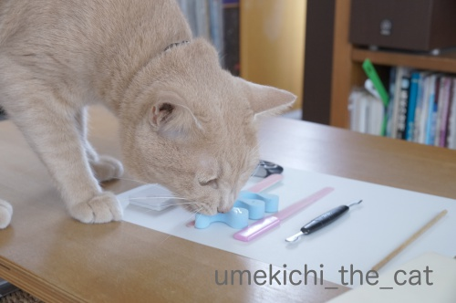
ケア用品の中でも一番執着しているのはこの青いスポンジ状のもの。
ペディキュアするときに足の指を離すために使うのですがこれが好きで好きで・・・
お気付きの方もいらっしゃるかと思いますがもう一山ないと全部の指が離れません。
足りない山はそう！梅吉に噛みちぎられましたw
のんきに写真を撮ってたら強奪されましたよ。
噛み心地が好きなんでしょうか・・・・・
強奪してがぶ！
念願叶ってウハウハかもしれませんが同時にちょっと困ってます。
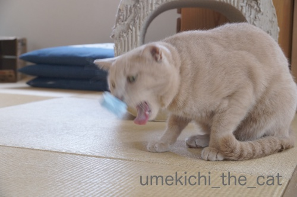
歯に刺さって取れない模様( ´艸｀)
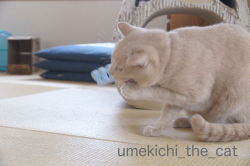
必死！！！
無事取れました。
おイタするからそんなことになるんですよwww
それにしてもすごい妖猫顔です (⌒_⌒;
私がケアしているときは張り付いてきます。
尖ったものが多いし危ないので梅吉に張り付かれるとケアが全然進みません（涙）
梅吉は幼い頃から人間の「爪」関係が大好きでした。
切った爪を食べようとした時期もあったしw
みなさんのお家のにゃんこは変なものに執着することはないでしょうか。
イニャバウワーはお出かけ前のお約束 [梅吉]

（ちょっとだけお鼻が「にじっ」としてまーす）

としおらしくしてみても

と玄関前で実力行使に出ようとしても

おかーさんのお出かけ直前、必ず冷蔵庫の前でイニャバウワー！！
梅吉選手、冷蔵庫から出てくるおやつを期待してのキメポーズ。
出来栄えで加点がもらえそうであります！
反り返りながら手に頭をこすりつけて来るんですよ。
私から見るとこんな感じ。
（14秒。音が出ます）
最後にぎゅいんとひと反りするのがポイントです＾＾
梅吉の幼い頃、出かける時の後追いがひどかったので
おやつを置いてその隙に出かけていたのですがそれがすっかり習慣になりました。
今では着替え始めるとわーわー催促が始まりますwww
梅吉、胴が長いな・・・
おっとの投稿活動とああ勘違い・・・ [梅吉]
梅吉さんがくんくんしている扇子は・・・


住吉大社がインスタで募集していた#わたしのすみよっさん。
おっとがポストした写真が入選！記念品として扇子と手ぬぐいをいただきました＾＾
扇子を持つとやりたくなるこの遊び！

「この、うつけ者めー！」
（注：梅吉はうつけ者ではありません。）
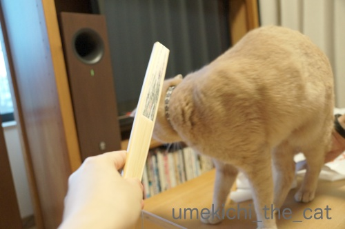
「たわけ者めー！！」
（注：梅吉はたわけ者でもありません。）
あれ？？
この遊びはお気に召さなかったんでしょうか。遊んでくれませんでした。

気になるのは扇の要に付いていた紐とビーズwていてい。

すみよっさんのご神紋の上にだって気にせず上がっちゃいます。

梅吉〝鼻〟紋も付けちゃいましたw
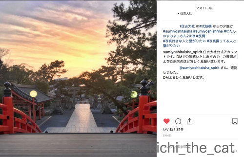
おっとの入選作を見てください。夕暮れ時のすみよっさんです。
空の色って不思議な色になりますよね。
もひとつおっとの手柄。
アイリスペットどっとコムのおそろいにゃんこフォトコンテスト2018に応募していたそうで
佳作に選ばれたんですよ。
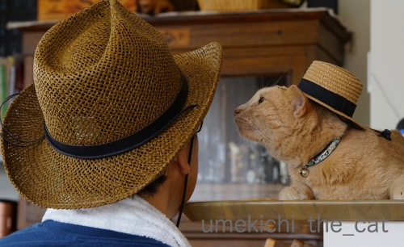
おそろい帽子写真。頑張りました(^_－)☆
（首タオルがなんですがwww）
そしておかーさんの嬉しい勘違い。
猫父さんの撮ったこてつくんの写真がアイシアの極楽ねこカレンダー2019に採用の記事を見ていて・・・
うちは残念だったな・・・「全プレ待ちでーす」なんてコメント書いて、あれ？？？
そういえばmiawmiawのパウチに入ったフードが届いていたな。
カレンダーは12月に入ったら届きますよ、って書いてあったような・・・
ん？？？なんか変だな・・・
そう！私はすっかり別件の連絡とすっかり勘違いしてました。
なんでそんな勘違いになったんでしょうねw
この辺りのおばちゃんの思考回路の解説は長くなるので省きます。
最近は一度思い込んだら脳の修正がなかなか効かなくて。
嫌ねぇ・・・
というわけで

この写真が採用になった模様です。
既出の写真ですが夏の終わりも終わりに梅吉の麦わら帽姿をアップできて良かったです＾＾
（Ja-Kou66さん見てるー？＾＾）
極楽ねこカレンダーは何月何日に採用になったか知らせてくれないので
指がつりそうになりながらカレンダーをめくってこてつくんと梅吉を探さなくては！
↑ガブッと一押し↑
住吉大社がインスタで募集していた#わたしのすみよっさん。
おっとがポストした写真が入選！記念品として扇子と手ぬぐいをいただきました＾＾
扇子を持つとやりたくなるこの遊び！
「この、うつけ者めー！」
（注：梅吉はうつけ者ではありません。）
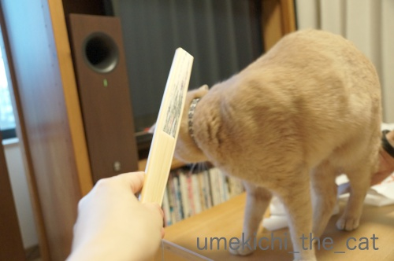
「たわけ者めー！！」
（注：梅吉はたわけ者でもありません。）
あれ？？
この遊びはお気に召さなかったんでしょうか。遊んでくれませんでした。
気になるのは扇の要に付いていた紐とビーズwていてい。
すみよっさんのご神紋の上にだって気にせず上がっちゃいます。
梅吉〝鼻〟紋も付けちゃいましたw
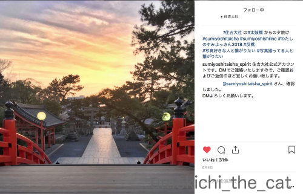
おっとの入選作を見てください。夕暮れ時のすみよっさんです。
空の色って不思議な色になりますよね。
もひとつおっとの手柄。
アイリスペットどっとコムのおそろいにゃんこフォトコンテスト2018に応募していたそうで
佳作に選ばれたんですよ。
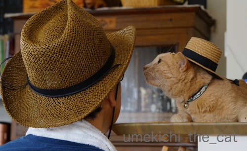
おそろい帽子写真。頑張りました(^_－)☆
（首タオルがなんですがwww）
そしておかーさんの嬉しい勘違い。
猫父さんの撮ったこてつくんの写真がアイシアの極楽ねこカレンダー2019に採用の記事を見ていて・・・
うちは残念だったな・・・「全プレ待ちでーす」なんてコメント書いて、あれ？？？
そういえばmiawmiawのパウチに入ったフードが届いていたな。
カレンダーは12月に入ったら届きますよ、って書いてあったような・・・
ん？？？なんか変だな・・・
そう！私はすっかり別件の連絡とすっかり勘違いしてました。
なんでそんな勘違いになったんでしょうねw
この辺りのおばちゃんの思考回路の解説は長くなるので省きます。
最近は一度思い込んだら脳の修正がなかなか効かなくて。
嫌ねぇ・・・
というわけで
この写真が採用になった模様です。
既出の写真ですが夏の終わりも終わりに梅吉の麦わら帽姿をアップできて良かったです＾＾
（Ja-Kou66さん見てるー？＾＾）
極楽ねこカレンダーは何月何日に採用になったか知らせてくれないので
指がつりそうになりながらカレンダーをめくってこてつくんと梅吉を探さなくては！
梅吉パラパラとネコメンタリー [梅吉]
私が普段PCを置いて使っているテーブルの斜め上方、梅吉のお気に入りの「巣」があります。
ちょうど寝顔がよく見える角度なのでついつい写真を撮ってしまうんですよねw
毎日毎日増え続ける同じような構図の代わり映えしない写真。
かわいい＆面白い表情はたくさんあるのですが
ブログに使うにはストーリー性に乏しくてボツに。
そのボツを集めてパラパラ漫画風につなげて見みました。
写真の角度、明るさなどは揃えていないので見難いかもしれません。
お許しくださいませm(_ _)m
（1分26秒あります）
最初はタオルだけだったのがカゴになりやがてガゴの中のタオルが変わって行くところに
時の移ろいが感じられるのではないでしょうか＾＾
写真は古い順からスタートしているので梅吉の成長もわかる、かな？
（１歳過ぎた頃からスタートなのであまり大きな変化はみられないのですけど）

あの「世界ネコ歩き」にも興味を示さず（猫に関しては）見るのは自分が写っている動画だけ
の梅吉が初めてテレビに映る他のにゃんこに興味を示しました！
そのお相手は・・・・・
（20秒です）
もみじさん17才。
ぴっちぴちのセブンティーンやで、って飼い主の村山さんはおっしゃっていました＾＾
これは先日放送されたネコメンタリー 猫も、杓子もの一コマ。
余命を宣告されたもみじさんと作家の村山由佳さんの穏やかな最後の日々の映像。
もみじさんの語りとして心に残るセリフがあったので引用します。
男性は「とおちゃん」に置き換えてくださいね。
『なあ、かあちゃん、いっつもうちにきくやん？
あんた、かあちゃんとこきて幸せやった？て
うちには幸せなんてようわからん
せやけどこれだけはわかるで
かあちゃんは、この世でいちばんうちのことが好き
うちは、この世でいちばんかあちゃんのことが好き
なあ、それでええやろ？
相思相愛や・・・』
もみじさん、2018年春、永眠しています。
↑ガブッと一押し↑
ちょうど寝顔がよく見える角度なのでついつい写真を撮ってしまうんですよねw
毎日毎日増え続ける同じような構図の代わり映えしない写真。
かわいい＆面白い表情はたくさんあるのですが
ブログに使うにはストーリー性に乏しくてボツに。
そのボツを集めてパラパラ漫画風につなげて見みました。
写真の角度、明るさなどは揃えていないので見難いかもしれません。
お許しくださいませm(_ _)m
（1分26秒あります）
最初はタオルだけだったのがカゴになりやがてガゴの中のタオルが変わって行くところに
時の移ろいが感じられるのではないでしょうか＾＾
写真は古い順からスタートしているので梅吉の成長もわかる、かな？
（１歳過ぎた頃からスタートなのであまり大きな変化はみられないのですけど）
あの「世界ネコ歩き」にも興味を示さず（猫に関しては）見るのは自分が写っている動画だけ
の梅吉が初めてテレビに映る他のにゃんこに興味を示しました！
そのお相手は・・・・・
（20秒です）
もみじさん17才。
ぴっちぴちのセブンティーンやで、って飼い主の村山さんはおっしゃっていました＾＾
これは先日放送されたネコメンタリー 猫も、杓子もの一コマ。
余命を宣告されたもみじさんと作家の村山由佳さんの穏やかな最後の日々の映像。
もみじさんの語りとして心に残るセリフがあったので引用します。
男性は「とおちゃん」に置き換えてくださいね。
『なあ、かあちゃん、いっつもうちにきくやん？
あんた、かあちゃんとこきて幸せやった？て
うちには幸せなんてようわからん
せやけどこれだけはわかるで
かあちゃんは、この世でいちばんうちのことが好き
うちは、この世でいちばんかあちゃんのことが好き
なあ、それでええやろ？
相思相愛や・・・』
もみじさん、2018年春、永眠しています。
脱力する梅吉となにわの底ヂカラ [梅吉]
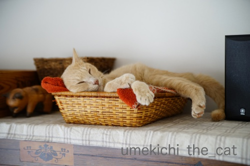


（歯をむき出してマジ寝してますw）
台風直後は物流がうまく機能していなかったのか
スーパーの商品棚がスカスカのこともありましたが我が家付近では元に戻っています。
家庭から出た路肩の災害ごみもほとんどが片付けられました。
北海道地震の方は
避難生活をされている方が9日17時半の時点で2617人とのこと。
半数以上が震源に近かった厚真町の方です。
札幌に限っていえば電力の回復もかなり進んで
通常通りの生活が出来ている方もいますが470人近くの方が避難生活をしています。
避難所での生活の疲れもかなりのものでしょう。
公営住宅の確保が進められて被災した方の住宅に当てる準備が進んでいるとのこと。
北海道は9月も後半になると朝晩は暖房が必要な地域も出てきます。
その前に皆さんがひと心地ついて暖かく過ごせる環境で暮らせますように。
北海道地震 猫を探している方へ [梅吉]
9月6日に発生した北海道の地震、「平成３０年北海道胆振東部地震」となりました。
地震の際、残念ながら行方不明になってしまったペットが多数いるようです。
6月に起きた大阪での地震の際に地震発生日を含めての３日間
行方不明になった猫が、いつ、どこで、どんなふうに見つかったかをまとめた方がいます。
猫を探していらっしゃる方、ぜひ参考にしてみてください。

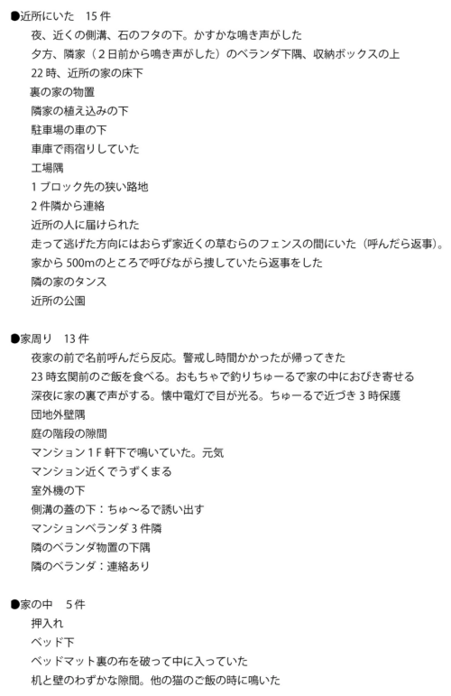
高橋のら一家さんのTwitterより。
ちゅ〜る、神だな！
我が家はちゅ〜るは食べさせない主義なんですが
味を覚えさせるのも重要かもしれない・・・
またペット保険を手がけるアニコムでは保険契約者以外の方でも利用できる
迷子になってしまったペット、迷子と思われるペットを保護しています
などの情報を登録するサイトを解放しています。

迷子登録フォーム
迷子捜索サポートマップ
迷子になってしまった子達、早くお家に戻れますように！！
地震の際、残念ながら行方不明になってしまったペットが多数いるようです。
6月に起きた大阪での地震の際に地震発生日を含めての３日間
行方不明になった猫が、いつ、どこで、どんなふうに見つかったかをまとめた方がいます。
猫を探していらっしゃる方、ぜひ参考にしてみてください。
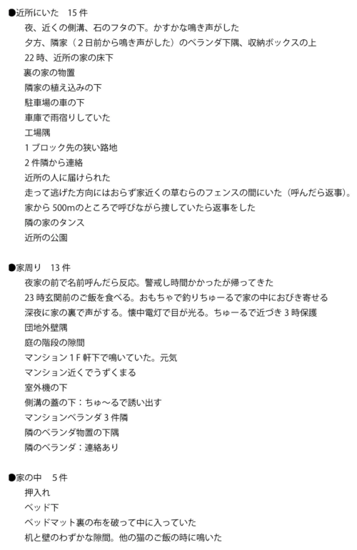
高橋のら一家さんのTwitterより。
ちゅ〜る、神だな！
我が家はちゅ〜るは食べさせない主義なんですが
味を覚えさせるのも重要かもしれない・・・
またペット保険を手がけるアニコムでは保険契約者以外の方でも利用できる
迷子になってしまったペット、迷子と思われるペットを保護しています
などの情報を登録するサイトを解放しています。
迷子登録フォーム
迷子捜索サポートマップ
迷子になってしまった子達、早くお家に戻れますように！！
タグ：北海道胆振東部地震
摂津国一の宮、被害が出ました。 [梅吉]
摂津国の（大阪）一の宮、住吉大社、すみよっさん。
先日の台風でかなりの被害が出ています。

（住吉大社のInstagramより）
ここは敷地内にある大海神社かとおもわれます。
（と思ったらどうやら一宮のようです。7日朝参拝できるようになってます。）

（住吉大社のInstagramより）
ここは二宮かとおもわれます。
昨日５日に住吉大社のHPをみると現在境内全域を閉鎖中ですとのことでした。
今日（６日）実際に行ってみました。
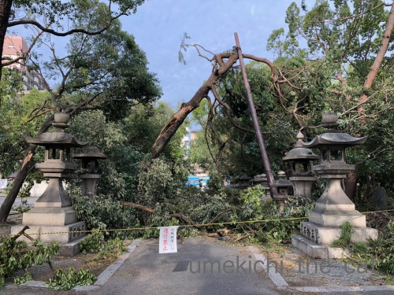
電車通りから本宮の方へ向かう参道のひとつなのですが
倒れた木で塞がれています。

同じく電車通り、大鳥居の横の大きな木が痛々しい姿で折れていました。

社務所が倒木の直撃を受けたようです・・・

閉まっている門もありました。（摂社の入り口です）
これ以上進んでも中の様子はわからないなと
太鼓橋の手前で（太鼓橋を渡らないと本宮の方へ行けません）帰ることにしました。
まさかこんなに被害が出ているなんて・・・
周りには商店街や商店兼住宅みたいな建物がたくさんありますが
大きな被害を受けている様子は見られません。
みんなすみよっさんが引き受けてくれた？
家に帰って住吉大社のHPを見てみると
なんと昨日一日で手を尽くして二宮、三宮、四宮までは参拝できるようになっていたようです。
地域の一の宮としての責任？矜持？
一の宮の格は伊達ではないなと思いました・・・
すみよっさんには「初辰まいり」というとても大切なご縁日があるのですが
今月のその日は９日。
その日を目処に全面復旧を目指しているのかな。
全面復旧した折にはあらためてお参りに行かなくては。
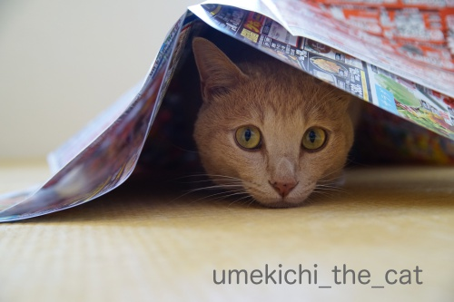
広告の下に潜り込んで嬉しそうな梅吉さんw
あにゃたの「吉」は住吉さんからいただいたんですよ＾＾
･゜ﾟ･*:.｡..｡.:*･゜ﾟ･*:.｡. .｡.:*･゜ﾟ･*･゜ﾟ･*:.｡..｡.:*･゜ﾟ･*:.｡..｡.:*･゜ﾟ･*
大阪の台風が過ぎてやれやれと思っていたら今度は実家のある札幌で地震。
実家での震度はおそらく震度５〜６程ではなかったかと思われます。
壁に亀裂が入って開かない窓があると言っていたので家が少し歪んだのかも。
落ち着いて状況確認をしたら新たな被害が判明するかも、です。
今暮らす分には支障は無く停電は続いているものの水道、ガス共に使えるとのことで
ちょっと安心しております。
おっとの実家では食器棚の中のものが飛び出たようですが
家には特に問題はない様子。
義母は義妹と孫と住んでいるのでテレビは見られなくとも
SNSなどで私の実家よりは入ってくる情報が多いかな。
こういう時は若い人と一緒だと心強いだろうな・・・
両家とも、いえ被災した地域にさらなる揺れがなければ良いのですが・・・
いえいえ、もう世界中どこでも災害はいらないです。
![[ＮＥＷ]](https://blog.ss-blog.jp/_images_e/120.gif) 実家のある東区、6日24時ごろに電力が回復しました。
実家のある東区、6日24時ごろに電力が回復しました。
おっとの実家のある清田区は7日20時ごろ回復しました。
〜追記〜
今回テレビで情報を得ることのできない両親のため（スマホなんて持ってません）
いろいろ情報を集めて知らせていたのですが・・・
SNS上に流れるいい加減で無責任な情報が多すぎることに唖然としました。
SNSはそれを良しとするツールでしょうから仕方のないことなのですが
どうでも良い単なる自分アピールのような情報に
#北海道地震
をつけるのだけは止めていただきたい。
被災して乏しい電源の中で必死で情報を探そうとしている人たちが
探している情報になかなかたどり着けなくなってしまいます。
先日の台風でかなりの被害が出ています。
（住吉大社のInstagramより）
ここは敷地内にある大海神社かとおもわれます。
（と思ったらどうやら一宮のようです。7日朝参拝できるようになってます。）
（住吉大社のInstagramより）
ここは二宮かとおもわれます。
昨日５日に住吉大社のHPをみると現在境内全域を閉鎖中ですとのことでした。
今日（６日）実際に行ってみました。
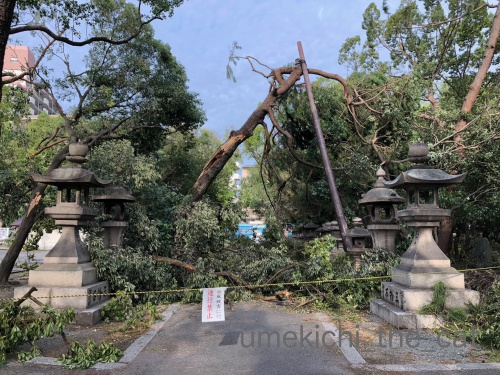
電車通りから本宮の方へ向かう参道のひとつなのですが
倒れた木で塞がれています。
同じく電車通り、大鳥居の横の大きな木が痛々しい姿で折れていました。
社務所が倒木の直撃を受けたようです・・・
閉まっている門もありました。（摂社の入り口です）
これ以上進んでも中の様子はわからないなと
太鼓橋の手前で（太鼓橋を渡らないと本宮の方へ行けません）帰ることにしました。
まさかこんなに被害が出ているなんて・・・
周りには商店街や商店兼住宅みたいな建物がたくさんありますが
大きな被害を受けている様子は見られません。
みんなすみよっさんが引き受けてくれた？
家に帰って住吉大社のHPを見てみると
なんと昨日一日で手を尽くして二宮、三宮、四宮までは参拝できるようになっていたようです。
地域の一の宮としての責任？矜持？
一の宮の格は伊達ではないなと思いました・・・
すみよっさんには「初辰まいり」というとても大切なご縁日があるのですが
今月のその日は９日。
その日を目処に全面復旧を目指しているのかな。
全面復旧した折にはあらためてお参りに行かなくては。
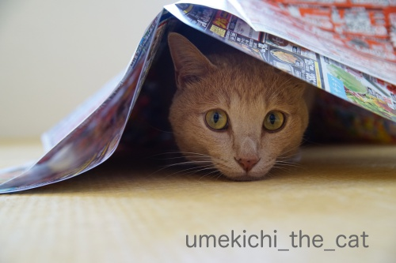
広告の下に潜り込んで嬉しそうな梅吉さんw
あにゃたの「吉」は住吉さんからいただいたんですよ＾＾
･゜ﾟ･*:.｡..｡.:*･゜ﾟ･*:.｡. .｡.:*･゜ﾟ･*･゜ﾟ･*:.｡..｡.:*･゜ﾟ･*:.｡..｡.:*･゜ﾟ･*
大阪の台風が過ぎてやれやれと思っていたら今度は実家のある札幌で地震。
実家での震度はおそらく震度５〜６程ではなかったかと思われます。
壁に亀裂が入って開かない窓があると言っていたので家が少し歪んだのかも。
落ち着いて状況確認をしたら新たな被害が判明するかも、です。
今暮らす分には支障は無く停電は続いているものの水道、ガス共に使えるとのことで
ちょっと安心しております。
おっとの実家では食器棚の中のものが飛び出たようですが
家には特に問題はない様子。
義母は義妹と孫と住んでいるのでテレビは見られなくとも
SNSなどで私の実家よりは入ってくる情報が多いかな。
こういう時は若い人と一緒だと心強いだろうな・・・
両家とも、いえ被災した地域にさらなる揺れがなければ良いのですが・・・
いえいえ、もう世界中どこでも災害はいらないです。
おっとの実家のある清田区は7日20時ごろ回復しました。
〜追記〜
今回テレビで情報を得ることのできない両親のため（スマホなんて持ってません）
いろいろ情報を集めて知らせていたのですが・・・
SNS上に流れるいい加減で無責任な情報が多すぎることに唖然としました。
SNSはそれを良しとするツールでしょうから仕方のないことなのですが
どうでも良い単なる自分アピールのような情報に
#北海道地震
をつけるのだけは止めていただきたい。
被災して乏しい電源の中で必死で情報を探そうとしている人たちが
探している情報になかなかたどり着けなくなってしまいます。
ベランダ掃除とご近所の状況 [梅吉]
台風が過ぎたら少しは涼しくなるかと思いましたが５日も暑かった大阪です。
7日からまた雨が降るというのでベランダの片付けをしました。
ブログを見ていただいている方はお気づきかと思いますが
我が家のベランダはとても広い。
よくブログに登場する広いベランダの他に
マンションの普通サイズのベランダが二つあります。
採光の面ではありがたいのですが夏は暑く冬は寒い！
そして！！
落ち葉が散乱するベランダ三箇所を33℃の気温の中掃除する、想像してみてくださいませー
汗だくになりながら掃除して落ち葉のゴミ出しに出てようやくマンション外の状況を見て来ました。
マンションのエントランスには雨水が溜まったままでしたが
（水曜日は管理人さんが休みなのです）
前の道路はすでに綺麗に掃除されていました。ありがたいことですm(_ _)m
ちょっとだけご近所の様子も見て来ました。

すぐ近くの小さな神社。
折れた枝を切り落とす作業の真っ最中。
氏子さんたちが一生懸命作業していたので
野次馬みたいにこれ以上写真を撮るのがはばかられました。
中には入らず神社回りの状況確認へ。
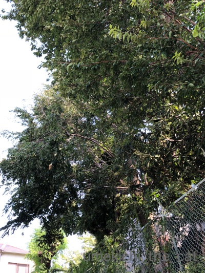
ここは折れた枝がまだ下がったままでした。
ちょっとわかりにくいかな・・・
葉の緑色が薄いのは光の当たり方ではなく
今まで表側にあった枝が折れ
光の当たらなかった部分が表に出て来たためです。

裏の門は閉じられて階段には大きな枝が横たわっていました。
この神社は昨日の動画で木がわさわさ揺れていた所。
あの時大きな枝が折れていたのでしょうね・・・
あまり時間がなかったので今日の状況確認はここまで。
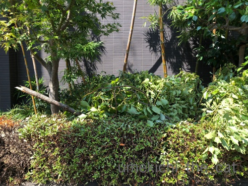
マンションに帰って来て植え込みを見てびっくり。
大きな枝が植え込みに落ちています。
楠なんですが向こう三件両隣のお家やマンションに楠は生えていません。
この枝の出所は想像つきますが
そこからこの大きさの枝が飛んでくるとは普通なら考えられません・・・
それほど昨日の台風の威力はすごかったのですね。
この枝がもしも窓ガラスを突き破って家に飛び込んで来ていたら
と思うとゾッとしました。

梅吉ブログなので最後はやっぱり梅吉で締めなければ＾＾
台風通過後冷蔵庫の上で眠りこけていた時の写真です。
明日もう一度ご近所の被害状況をアップして台風被害のお話は終わりにします。
もう少しお付き合いくださいませm(_ _)m
タグ：台風21号
暴風雨の21号が過ぎて行きました [梅吉]
臨時更新です！
本日9月4日大阪上空を台風21号が通過して行きました。
おっとの会社は昨日の時点で全社員自宅待機の指示が。
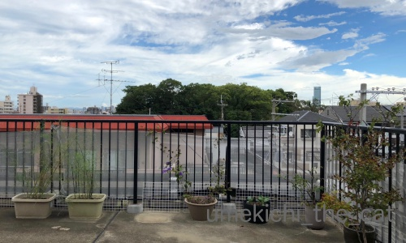
朝8時半くらいは雲がたくさんありながらも晴れていたんですよ。

雲の中には嵐を予感させるようなものも！あの中にはラピュタが！？
梅吉は朝からテンション高く走り回っていました。
祖母が「嵐の前は猫が荒れる」とよく言っていたのですがそれ？
（こんな俗説聞いたことありますか？）
遊び相手（おっと）がいてハイテンションになっていただけ？？
空が暗くなり風が吹き始めたのは10時ぐらいから。雨も降り始めました。
学校、商業施設は休みのところが多く電車もほとんど止まっているので
外は不気味なほど静かです。
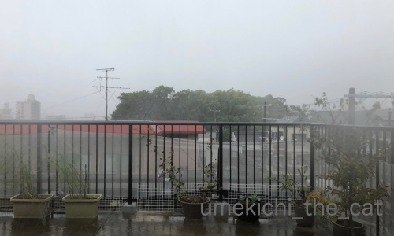
台風が近づいて来た午後1時半の風景。
晴れている時右手奥に見えていた大きなビルが見えなくなっています。

この頃はまだ余裕の梅吉w

ちゅうちゅうする余裕なんかもあったんですよw
そして3時頃の動画です。
（15秒です。バリバリ風の音が出ます。）
台風が接近中の雨風、台風の目の中での強風。
その後台風が去って行く時の暴風雨の動画です。
近くの神社の木がわさわさ揺れて生木が裂けています。
空には枯葉やビニール袋などが巻き上げられて風が一瞬やむと
わらわらと落ちてくるの繰り返しでした。
この時の突風は本当にすごくてマンションながら軽く家が揺れました。
窓ガラスが割れるんじゃないかという心配、人生で初めてしました。
この間３分間ほどの停電が２回ほど。
冷蔵庫＆冷凍庫の中の物どうしよう・・・と心配でたまりませんでした（笑）
（お酒のアテみたいのばっかり入っているから毎日宴会だな、とwww）

これには梅吉も固まりましたよ。
背中の毛が立っているのが分かるでしょうかwww

５時ごろには雨風もおさまって梅吉も窓に近寄って外を見る余裕も出来たみたい＾＾
ベランダにあちこちから飛んで来た枯葉やゴミが散乱しているのが気になるようです。
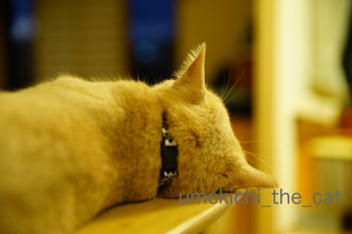
昼間はずっと緊張していたのか夜はいつも以上に眠そうでした。
可愛い後頭部がホッとしているように見えましたよ＾＾
ありがたいことに我が家はベランダの鉢が倒れたくらいで何も被害はありませんでした。
が、今日は一歩も家の外に出ていないので外がどうなっているのかはわかりません。
木が倒れたり大きな枝が散乱したりしていそうです。
暴風雨中はバリバリ金属製の音もしていたので建物の被害もあったかもしれません。
警察や消防が来た気配はないので大きな被害ではないと思いますが。
台風21号は関西圏を通過して行きましたが被害の全容はまだ把握できていないという感じです。
奈良＆和歌山の山間部は先日も被害を受けているので
予想以上の被害や二次被害が出ていないか心配です。
そして21号が今後進んでいく進路で被害がないように祈るばかりです。
本日9月4日大阪上空を台風21号が通過して行きました。
おっとの会社は昨日の時点で全社員自宅待機の指示が。
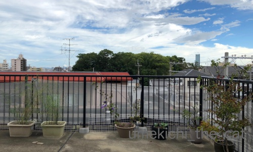
朝8時半くらいは雲がたくさんありながらも晴れていたんですよ。
雲の中には嵐を予感させるようなものも！あの中にはラピュタが！？
梅吉は朝からテンション高く走り回っていました。
祖母が「嵐の前は猫が荒れる」とよく言っていたのですがそれ？
（こんな俗説聞いたことありますか？）
遊び相手（おっと）がいてハイテンションになっていただけ？？
空が暗くなり風が吹き始めたのは10時ぐらいから。雨も降り始めました。
学校、商業施設は休みのところが多く電車もほとんど止まっているので
外は不気味なほど静かです。
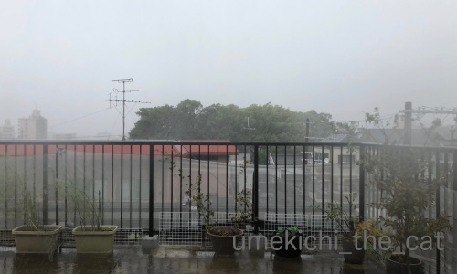
台風が近づいて来た午後1時半の風景。
晴れている時右手奥に見えていた大きなビルが見えなくなっています。
この頃はまだ余裕の梅吉w
ちゅうちゅうする余裕なんかもあったんですよw
そして3時頃の動画です。
（15秒です。バリバリ風の音が出ます。）
台風が接近中の雨風、台風の目の中での強風。
その後台風が去って行く時の暴風雨の動画です。
近くの神社の木がわさわさ揺れて生木が裂けています。
空には枯葉やビニール袋などが巻き上げられて風が一瞬やむと
わらわらと落ちてくるの繰り返しでした。
この時の突風は本当にすごくてマンションながら軽く家が揺れました。
窓ガラスが割れるんじゃないかという心配、人生で初めてしました。
この間３分間ほどの停電が２回ほど。
冷蔵庫＆冷凍庫の中の物どうしよう・・・と心配でたまりませんでした（笑）
（お酒のアテみたいのばっかり入っているから毎日宴会だな、とwww）
これには梅吉も固まりましたよ。
背中の毛が立っているのが分かるでしょうかwww
５時ごろには雨風もおさまって梅吉も窓に近寄って外を見る余裕も出来たみたい＾＾
ベランダにあちこちから飛んで来た枯葉やゴミが散乱しているのが気になるようです。
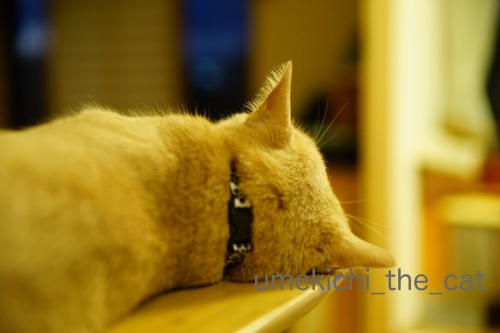
昼間はずっと緊張していたのか夜はいつも以上に眠そうでした。
可愛い後頭部がホッとしているように見えましたよ＾＾
ありがたいことに我が家はベランダの鉢が倒れたくらいで何も被害はありませんでした。
が、今日は一歩も家の外に出ていないので外がどうなっているのかはわかりません。
木が倒れたり大きな枝が散乱したりしていそうです。
暴風雨中はバリバリ金属製の音もしていたので建物の被害もあったかもしれません。
警察や消防が来た気配はないので大きな被害ではないと思いますが。
台風21号は関西圏を通過して行きましたが被害の全容はまだ把握できていないという感じです。
奈良＆和歌山の山間部は先日も被害を受けているので
予想以上の被害や二次被害が出ていないか心配です。
そして21号が今後進んでいく進路で被害がないように祈るばかりです。

カフェオレ色の梅吉

梅吉 2023年8月10日 永眠


梅吉と出会った譲渡会

犬猫の理由なき殺処分ゼロ
妄想広告
UMEKICHI 光

爆発的に早い！
時々攻撃的！
Thanks to Mr.Boss365
爆発的に早い！
時々攻撃的！
Thanks to Mr.Boss365